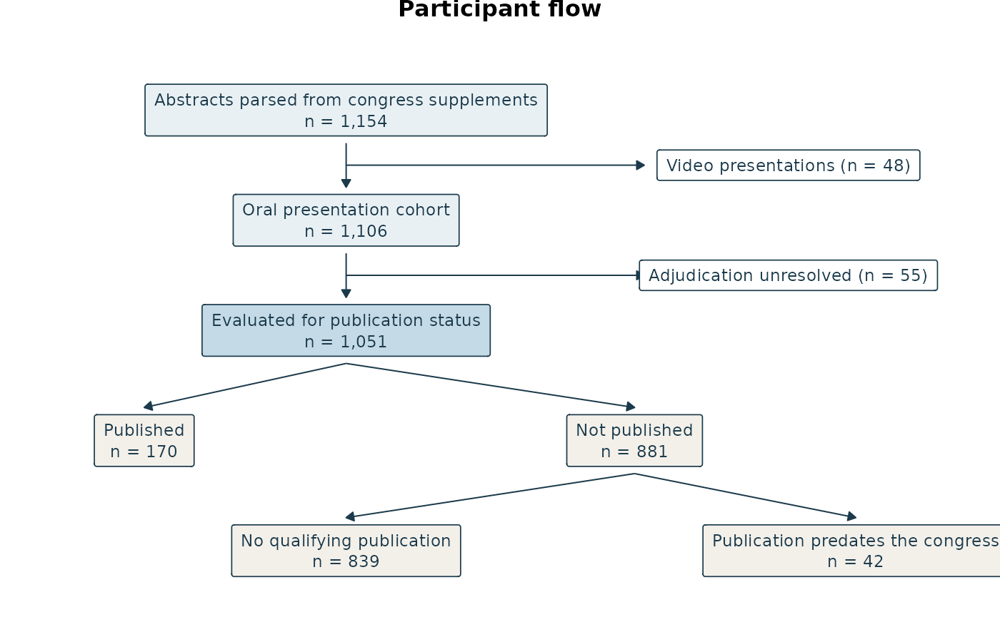

Appendix: A Participant Flow That Closes
Source:vignettes/participant-flow.Rmd
participant-flow.RmdThe problem a renderer cannot see
Every R package for participant-flow diagrams generates the picture
from data: flowchart, consort,
ggconsort, dtrackr, vtree. That
is the right instinct, because it keeps hand-typed numbers out of the
figure. It also stops there. None of them checks that the boxes
close.
A flow whose spine reads 1,154 to 1,106 with a 48 exclusion is right. One that reads 1,154 to 1,100 with a 48 exclusion is a reporting error, and no renderer will notice, because a renderer draws what it is handed. The figure will look professional and be wrong, and the error will be discovered by a reviewer or not at all.
mysterycall_strobe_flow() has exactly this gap: it takes
n_total, n_included and
n_logistic from the caller and draws them. The two
functions in this appendix are the layer underneath it. Validate first,
render second, and make the validation reusable.
Validation is a separate step on purpose
spec <- mysterycall_flow_spec(
spine = c(
"Abstracts parsed from congress supplements" = 1154,
"Oral presentation cohort" = 1106,
"Evaluated for publication status" = 1051
),
exclusions = list(
"Abstracts parsed from congress supplements" = c("Video presentations" = 48),
"Oral presentation cohort" = c("Adjudication unresolved" = 55)
),
splits = list(
"Evaluated for publication status" = c("Published" = 170, "Not published" = 881),
"Not published" = c("No qualifying publication" = 839,
"Publication predates the congress" = 42)
)
)
spec$closed
#> [1] TRUEThree things are checked:
- The spine closes. Each step, minus the exclusions leaving it, equals the next step. Here 1154 − 48 = 1106, and 1106 − 55 = 1051.
- Every split sums to its parent. 170 + 881 = 1051, and within that, 839 + 42 = 881. Splits may nest to any depth; a child can itself be split.
-
Every count is a count. No negative, fractional,
NA, or duplicated values.
The failure message names the step
An error that says a diagram is inconsistent somewhere is nearly useless in a flow with fifteen boxes. This one points at the arithmetic that failed:
mysterycall_flow_spec(
spine = c("Screened" = 100, "Analysed" = 90),
exclusions = list("Screened" = c("Ineligible" = 5))
)
#> Error:
#> ! this flow does not close:
#> - Screened (100) minus 5 excluded is 95, but the next step Analysed is 90All failures are collected rather than reported one at a time, so a spec with two problems tells you both:
mysterycall_flow_spec(
spine = c("Screened" = 100, "Analysed" = 95),
splits = list("Analysed" = c("A" = 50, "B" = 40))
)
#> Error:
#> ! this flow does not close:
#> - Screened (100) minus 0 excluded is 100, but the next step Analysed is 95
#> - the parts of Analysed sum to 90, but Analysed is 95Put it in the test suite
This is the reason validation is not folded into the drawing
function. A check that only runs at render time runs on the author’s
laptop, once, and a figure that goes stale six months later goes stale
silently. The same call in tests/testthat/ fails the
build:
test_that("the published flow still matches the analysis dataset", {
spec <- mysterycall_flow_spec(
spine = c(
"Screened" = nrow(screened),
"Eligible" = nrow(eligible),
"Analysed" = nrow(analysed)
),
exclusions = list(
"Screened" = c("Did not meet criteria" = nrow(screened) - nrow(eligible)),
"Eligible" = c("Incomplete outcome" = nrow(eligible) - nrow(analysed))
)
)
expect_true(spec$closed)
})Wire the counts to the data rather than typing them, and the test tells you the manuscript figure disagrees with the dataset the moment it does.
Drawing
mysterycall_strobe_diagram() accepts a validated spec
and nothing else:
mysterycall_strobe_diagram(list(spine = c(a = 2, b = 1)))
#> Error:
#> ! `spec` must come from mysterycall_flow_spec(), so the arithmetic is checked before anything is drawn.
# Note the print(). The function returns its ggplot invisibly, because its
# common use is writing a file via output_path, where an auto-printed plot
# would be noise. In an R Markdown chunk that means nothing is drawn unless
# you print it explicitly.
print(mysterycall_strobe_diagram(spec, title = "Participant flow"))
It is ggplot2 only. There is no Graphviz or htmlwidget path, so
writing a PNG needs no headless browser and the figure rebuilds in a
plain CI container. Pass output_path to write the file
directly.
Background
The figure is saved on an opaque white background by default.
ggplot2::theme_void() leaves the panel blank, which writes
a fully transparent PNG: invisible on a white page, and wrong the moment
the figure is dropped into a Word manuscript or onto a coloured slide,
where whatever sits behind it shows through the boxes. Pass
background = NA if a transparent figure is what you
actually want.
Relationship to the other flow functions
| Function | Use it when |
|---|---|
mysterycall_flow_spec() |
You want the arithmetic checked, in a test or before drawing |
mysterycall_strobe_diagram() |
You have a validated spec and want a ggplot |
mysterycall_strobe_flow() |
Older, simpler entry point; takes counts and draws them without validating |
mysterycall_flow_diagram() |
Fixed-shape CONSORT-style diagram for the standard audit pipeline |
New work should prefer the flow_spec() and
strobe_diagram() pair, because it is the only one of the
four that can tell you the numbers are wrong.
See also
vignette("reporting-conventions") for how the package
formats the numbers that end up in these boxes, and
mysterycall_strobe_checklist() for the STROBE item that
asks for a participant flow in the first place.